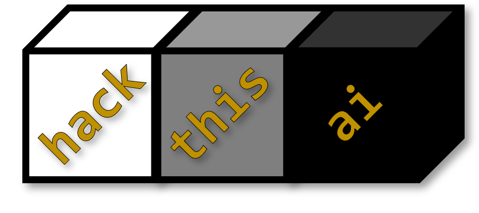

Welcome to HackThisAI!
HackThisAI is a series of capture the flag (CTF) challenges to educate and train adversarial machine learning techniques. CTFs are a common way information security professionals learn new skills and compete across the community. Challenges are categorized so that players can focus on specific topics. The HackThisAI challenges should be approachable for new data scientists, machine learning engineers, and traditional infosec professionals, but progress in difficulty to a point that requires combinations of advanced techniques and creative approaches.
Background
Often, you'll see adversarial machine learning tasks classified into these buckets. It's a useful framework for bringing an adversarial mindset to AI/ML products, but remember that these tasks are not mutually exclusive. Complex objectives may require combinations of methods that traditionally belong in these categories.
- Evade the model. Can you evade or fool the model? In many applications, model classification is used in control flow: if model.predict() == A: do this; else: do that. If you can successfully control the model output, you may have some sway over control flow. Evasion is also a fundamental task that may help with influence and steal challenges.
- Influence the model. Can you change how the model operates? You may have direct or indirect access to training data or model training steps.
- Steal the model. Can you steal, extract, or invert the model? In traditional hacking, you might want to use access to exfiltrate a model binary. However, in these challenges, you'll want to interact with the model API to learn things about it's structure and find a way to recreate it.
- Infer membership. Was this data point used in the model training process? If you can determine that, you could violate privacy considerations or start learning things about the training dataset.
Challenge Directory